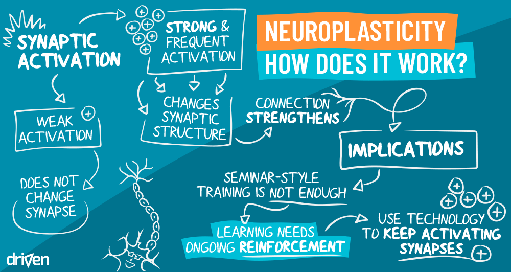
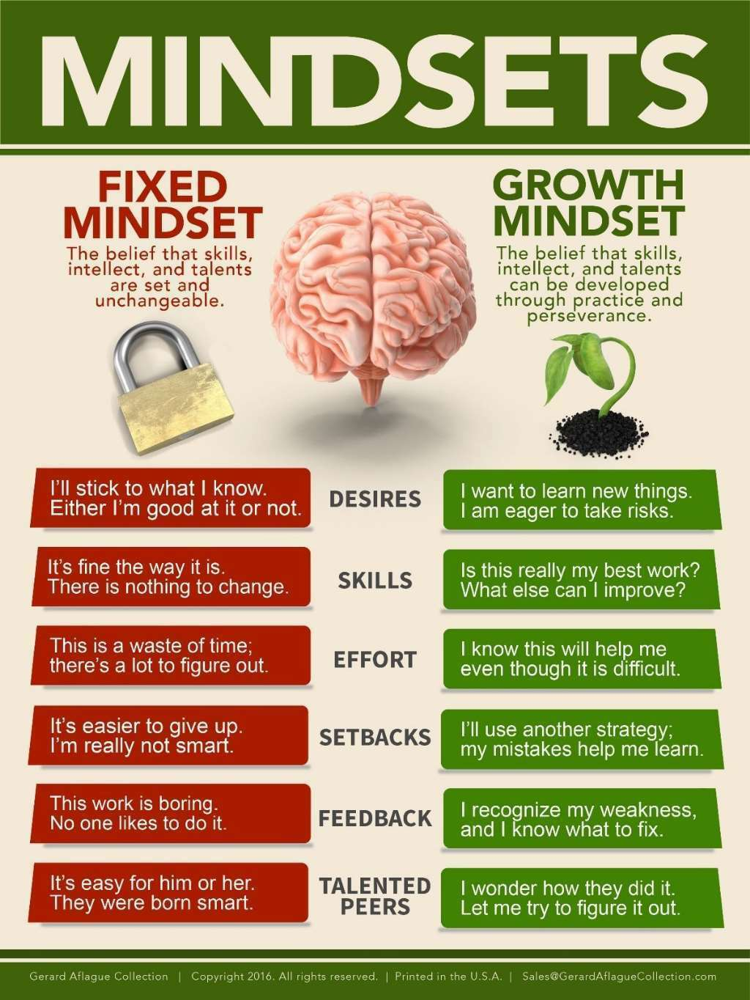

What is neuroplasticity and its benefits?
Find out more about Neuroplasticity
1. Neuroplasticity
According to brainworks.com. Neuroplasticity is the 'muscle building' part of the brain; the things we do often we become stronger at, and what we don’t use fades away. That is the physical basis of why making a thought or action over and over again increases its power. Over time, it becomes automatic; a part of us. We literally become what we think and do.
Neuroplasticity is at work throughout life. Connections within the brain are constantly becoming stronger or weaker, depending on what is being used. Younger people change easily; their brains are very plastic. As we age change doesn't come as easily; the brain loses some of its plasticity and we become more fixed in how we think, learn, and perceive.
2. Neuroplasticity and Learning
The relation between neuroplasticity and learning is an easy one to surmise—when we learn, we form new pathways in the brain. Each new lesson has the potential to connect new neurons and change our brain’s default mode of operation.
Such like learning new language, technologies, a new music instrument certainly improve your neuroplasticity. I found out reading book and learning new perspectives are also super useful for your brain activity as well.
3. A Growth Mindset and Neuroplasticity
A person with a growth mindset believes that he or she can get smarter, better, or more skilled at something through sustained effort—which is exactly what neuroplasticity tells us. You might say that a growth mindset is simply accepting the idea of neuroplasticity on a broad level!
4. Neuroplasticity in Adults
This ability is not absent in adults, but it is generally observed less than in children and at lower strengths; however, the adult brain is still capable of extraordinary change.
It can restore old, lost connections and functions that have not been used in some time, enhance memory, and even enhance overall cognitive skills.
The potential is generally not as great in older adults as it is in children and young adults, but with sustained effort and a healthy lifestyle, adults are just as able to promote positive change and growth in their brains as the younger generations.
5. Neuroplasticity Exercises
All of these activities and exercises have been found to improve neuroplasticity and may be helpful for dealing with depression:
- Memory tasks and game
- Learning to juggle
- Learning to play new music instrument
- Leaning new language
- Yoga
- Challegning brain acttivities such like sudoku, crosswords, cubic
- Mild to moderate regular exercise, healthful habit
- Learning new subject or reading a new book
6. Music changes the brain
This is the most thing I love about because I listen to music everyday. It does not matter what sort of music that you listened to, music will help you focusing and mediatate you when you need.
Basically, findings on how music affects the brain indicate that musical training—and perhaps even habitual engagement with listening to and appreciating music—can help the brain enhance its natural neuroplasticity and improve countless abilities and cognitive skills.
Growth Mindset
Find out more about Growth vs Fixed Mindset
1. What is Growth Mindset & Fixed Mindset
A Growth mindset is “the understanding that abilities and understanding can be developed” (Mindset Works, n.d.). Those with a growth mindset believe that they can get smarter, more intelligent, and more talented through putting in time and effort.
While a Fixed mindset is one that assumes abilities and understanding are relatively fixed. Those with a fixed mindset may not believe that intelligence can be enhanced, or that you either “have it or you don’t” when it comes to abilities and talents.
2. How to train your Growth mindset
There are eight general approaches for developing the foundation for such a mindset:
- Create a new compelling belief: a belief in yourself, in your own skills and abilities, and in your capacity for positive change.
- View failure in a different light: see failure as an opportunity to learn from your experiences and apply what you have learned next time around.
- Cultivate your self-awareness: work on becoming more aware of your talents, strengths, and weaknesses; gather feedback from those who know you best and put it together for a comprehensive view of yourself.
- Be curious and commit to lifelong learning: try to adopt the attitude of a child, looking at the world around you with awe and wonderment; ask questions and truly listen to the answers.
- Get friendly with challenges: know that if you mean to accomplish anything worthwhile, you will face many challenges on your journey; prepare yourself for facing these challenges, and for failing sometimes.
- Do what you love and love what you do: it’s much easier to succeed when you are passionate about what you’re doing; whether you cultivate love for what you already do or focus on doing what you already love, developing passion is important.
- Be tenacious: it takes a lot of hard work to succeed, but it takes even more than working hard—you must be tenacious, weathering obstacles and getting back up after each time you fall.
- Inspire and be inspired by others: it can be tempting to envy others when they succeed, especially if they go farther than you, but it will not help you to succeed; commit to being an inspiration to others and use the success of others to get inspiration as well (Zimmerman, 2016).